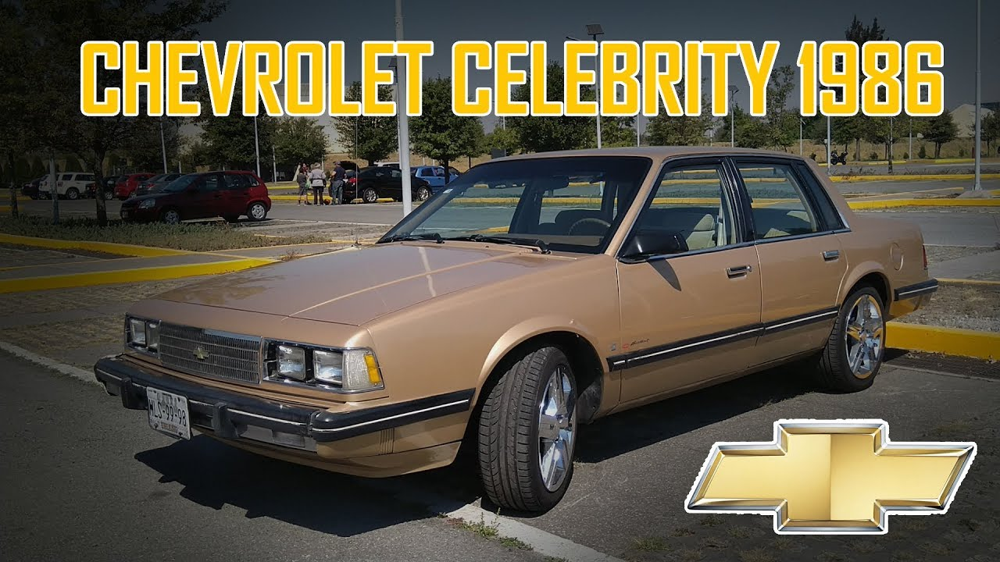
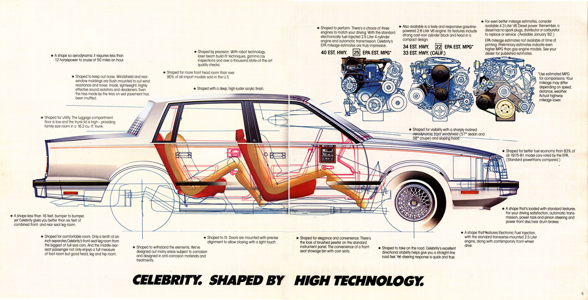
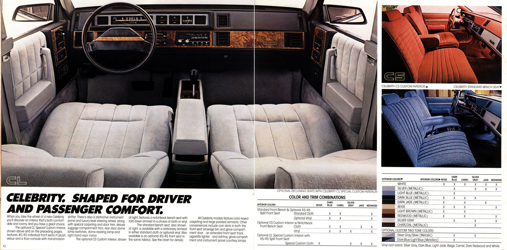

Chevrolet Celebrity (1.982 - 1.989)
La Historia:
El Chevrolet Celebrity llegó al mercado en el año 1982 para ocupar un lugar intermedio entre el pequeño Citation y el mediano Malibú Classic dentro de la gama de productos de la división Chevrolet y como estrategia para contrarrestar las ventas de vehículos de tamaño intermedio, de origen extranjero, como Audi y Volvo en el mercado norteamericano, aunque en algunos mercados, como en el caso de México, este sustituyó al Malibu debido a las restricciones gubernamentales impuestas a los vehículos con motores de 8 cilindros.
Incluso se produjo una versión más deportiva, apta para ser vendida en Europa llamada Eurosport, que incluía defensas y espejos pintados en el mismo color de la carrocería y caja de cambios manual de 5 velocidades Getrag, fabricada en Alemania.
Descripción:
El Chevrolet Celebrity poseía tracción en las ruedas delanteras, un atractivo diseño y motores de baja cilindrada que favorecían el consumo de combustible.
El Celebrity ofrecía una amplia cabina monocasco de tres volúmenes, con un amplio baúl. En su interior podían viajar 5 pasajeros y hasta 6, cuando se montaba una asiento completa delante. Se ofrecía en tres versiones, la de cuatro puertas, otra de dos puertas, también de tres volúmenes y una rural, que incluso reemplazó a la Station Wagon Malibú Classic cuando esta se dejó de fabricar en 1983.
El espacio interior, resultaba favorecido, al tener el piso plano, gracias a que todos sus dispositivos mecánicos se montaban adelante sobre un subchasis.

Allí se ubicaba un motor V6 de 2800 c.c (173 pulgadas cúbicas) con abertura a 60 grados, que producía 114 caballos a 4.800 rpm, un torque de 148 libras pie a 2.400 rpm, su orden de encendido era 1,2,3,4,5,6. El diámetro del pistón 89 mm y la carrera de este 76 mm, alimentado por un carburador doble. Su índice de compresión era de 8.5 a 1. En Estados Unidos se ofrecía además con un motor de 4 cilindros y 2.500 c.c fabricado por la división Pontiac.
Se podía escoger con una caja de cambios manual de 4 velocidades accionada desde el piso, mediante guayas, o una automática Turbo Hydramatic 125 de tres velocidades, la que se manejaba mediante una palanca ubicada en la columna de dirección. Usaba dirección de cremallera, asistida hidráulicamente.
El sistema de frenos servoasistido, usaba una bomba doble, discos en las ruedas delanteras y campanas en las traseras. El sistema eléctrico era alimentado por un alternador Delcotrón de 66 amperios para los autos de versión básica, y de 94 amperios para los de lujo. Usaba llantas de 14 pulgadas con neumáticos 185/70 R14“. La capacidad del tanque de gasolina fue de 62 litros (16.4 galones).
Este modelo llegó a venderse con muy buenos resultados en mercados emergentes como México y Colombia donde en este último, a pesar de la invasión de autos coreanos,chinos y japoneses sigue vigente por su mecánica fiable y en algunos casos fácil de reparar.
Modelos y diferencias:
Celebrity CS:
Producido entre 1982 y 1983.
Se vendía en versión básica con caja mecánica de 4 velocidades, silla delantera con espaldar completo, alternador menos potente(66 amperios), e instrumentación básica en la que primaban los testigos luminosos sobre los relojes.
El radio Delco (de norma en el particular), con cuatro parlantes tenía los botones uno al lado del otro.
Los rines eran de lámina corriente con copas pequeñas en plástico negro, en la versión taxi, este tipo de auto también traía tapicería en cordobán.
El modelo mecánico para servicio particular, usaba unas copas metálicas cromadas, con formas de estrella y un logotipo amarillo en el centro.

En el Celebity CS, también se vendía la versión de lujo, cuyas principales diferencias eran las siguientes:
Caja automática de tres velocidades, asiento delantera con espaldares de graduación independiente, alternador de 94 amperios, instrumentación completa en la que primaban los relojes análogos sobre los testigos luminosos que eran minoría, en este tablero la guantera descendía.
Sus rines deportivos venían cromados con visos negros y una pequeña copa central con el corbatín de la marca.
La parrilla delantera, era pequeña, con una pequeña depresión en el centro y sus faros usaban la tradicional unidad sellada (Sealed Beam).
Las luces de cola usaban el color naranja en el indicador de direccional. Estos últimos rasgos los compartían tanto el modelo básico como el de lujo.
El aire acondicionado era de norma en las versiones de lujo, sin tener en cuenta si su caja de cambios era manual o automática.
Celebity CL:
Producido entre 1984 y 1986.
Se vendía una versión básica con caja de cambios mecánica de 4 velocidades, y otra de lujo con caja de cambios automática de tres velocidades, el tablero tanto en las dos versiones, suministraba la información mediante agujas.
El radio conservaba los cuatro parlantes pero su botones ya no estaban ubicados uno al lado del otro, sino en línea recta de arriba hacia abajo.
La guantera abría halando de ella como un cajón.

El botón de accionamiento del desempañador trasero, ya no era de oprimir, ahora se debía girar.
Las manijas internas de las puertas, lo mismo que los tapizados, descansabrazos y rejillas de ventilación eran diferentes.
El frontal del auto, así como la bocelería tenían nuevo diseño, lo mismo que las luces de cola, cuyo indicador de direccional era rojo, en lugar del tradicional naranja, usado en el CS.
El aire acondicionado era de serie en las dos versiones.
A partir de 1987 el Celebrity recibe un rediseño por la cual la parrilla y el frente se modifican con un aspecto más moderno, ya que se sustituyen las unidades selladas por faros de halógeno, y las direccionales se ponen en la salpicadera, a la altura de éstos en lugar de abajo.
Así también, los cuartos traseros adoptan una configuración más simple, y en la defensa delantera se montan luces direccionales adicionales.
Los detalles y el equipamiento interior permanecen casi iguales, pero hay un gran cambio en la motorización.
El motor de 4 cilindros recibe 12 caballos más, y se cambia el V6 de carburador doble por un nuevo motor 2.8 V6 de Alta Potencia con inyección electrónica multipunto (MPFI), muy apreciado por el mercado americano.
Para el último año de producción, se incorpora el nuevo motor 3.1 MPFI, pero solo para la versión Rural.